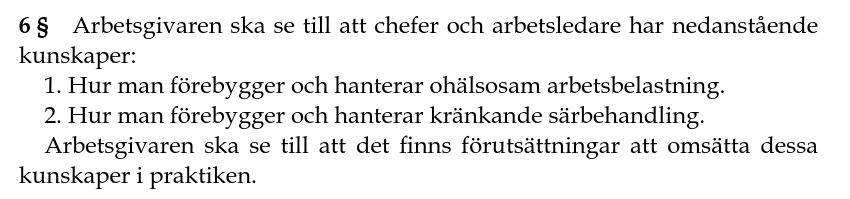
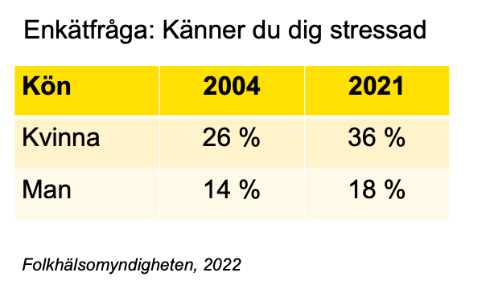
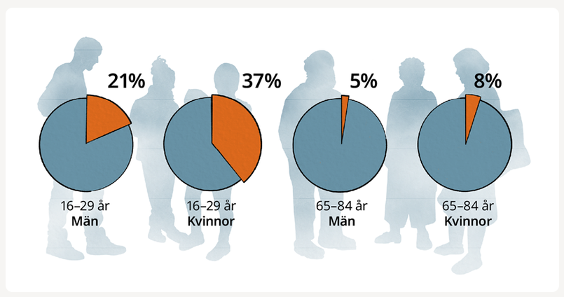
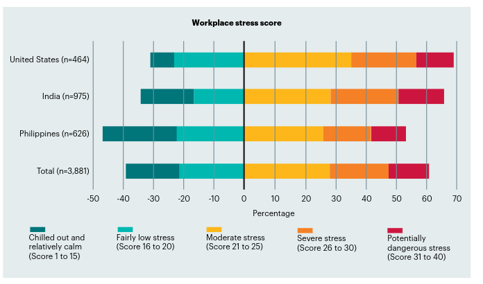
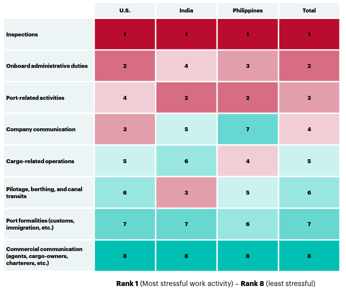
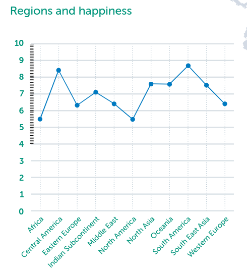

Vad menas?
Hur arbetsmiljön ordnas, leds, fördelas och kommuniceras
Samspelet mellan människor

“(…) lika rättigheter och möjligheter oavsett kön, könsöverskridande identitet eller uttryck, etnisk tillhörighet, religion eller annan trosuppfattning, funktionsnedsättning, sexuell läggning samt ålder”
Diskrimineringsgrunder
Former av diskriminering
“Handlingar som riktas mot en eller flera arbetstagare på ett kränkande sätt och som kan leda till ohälsa eller att arbetstagare sätts utanför arbetsplatsens gemenskap”
Du som överstyrman får kännedom om att en matros under längre tid har behandlats illa av två äldre kollegor.
De två äldre matroserna har arbetat i fartyget under flertalet år och den utsatta är betydligt yngre och ny ombord.
Vad som har hänt är för dig något oklart men vad det verkar som så handlar det om allmän otrevlighet, glåpord, medvetet undanhållande av information och att man utsatt den här matrosen för situationer i syfte att få honom att se “dum” ut.
“…innebär en aktivering av det sympatiska nervsystemet (…) ökning av stresshormonerna adrenalin, noradrenalin och kortisol”




När vi upplever hot:
Erfarna ledare, vid hög grad av stress.
Krav:
Bristande resurser:
Hur kan vi ombord arbeta för att motverka yrkesrelaterad stress i vår roll som maskinchef eller överstyrman?
Hitta fem (5) exempel.
Lagen om vilotid för sjömän.
Rangordna:
